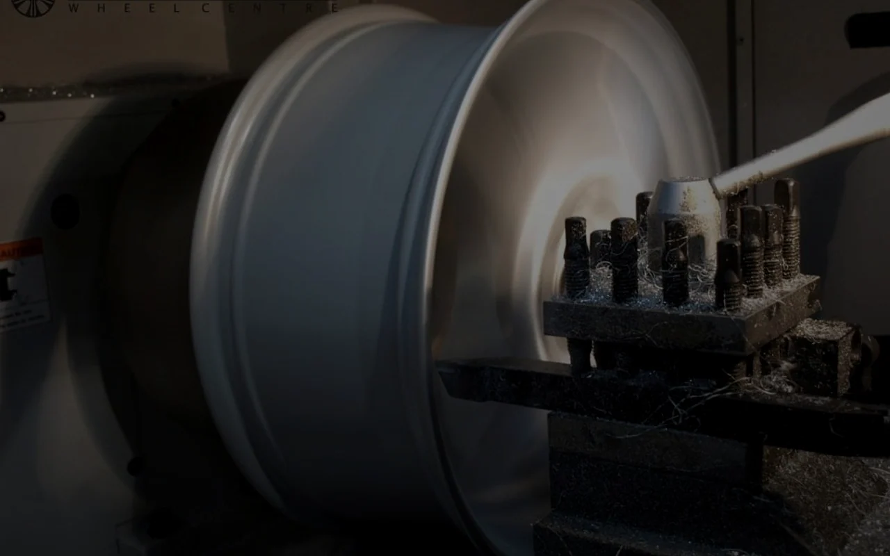

Bu Hizmet Nedir?
CNC Diamond Cut; parlak yüzeyli jantlarda torna benzeri kesim teknolojisiyle alüminyum yüzeyin yeniden işlenmesidir. Çizilmiş veya matlaşmış diamond cut bölgeleri orijinal görünüme kavuşturulur.
Her İşin Bir MARKA’SI Vardır
Diamond cut jantlarda CNC destekli hassas tornalama ile orijinal parlak yüzey yenileme.

CNC Diamond Cut; parlak yüzeyli jantlarda torna benzeri kesim teknolojisiyle alüminyum yüzeyin yeniden işlenmesidir. Çizilmiş veya matlaşmış diamond cut bölgeleri orijinal görünüme kavuşturulur.
Ortalama 2–4 iş günü (jant sayısı ve program süresine göre).
Yalnızca diamond cut tasarımlı jantlarda uygulanır; ön inceleme şarttır.
Jant kalınlığına bağlıdır; her işlemde ölçüm yapılır.
Doğru programlama ile yüksek estetik uyum sağlanır.
Uzman ekibimiz jantınızı inceleyerek size en uygun çözümü sunar.